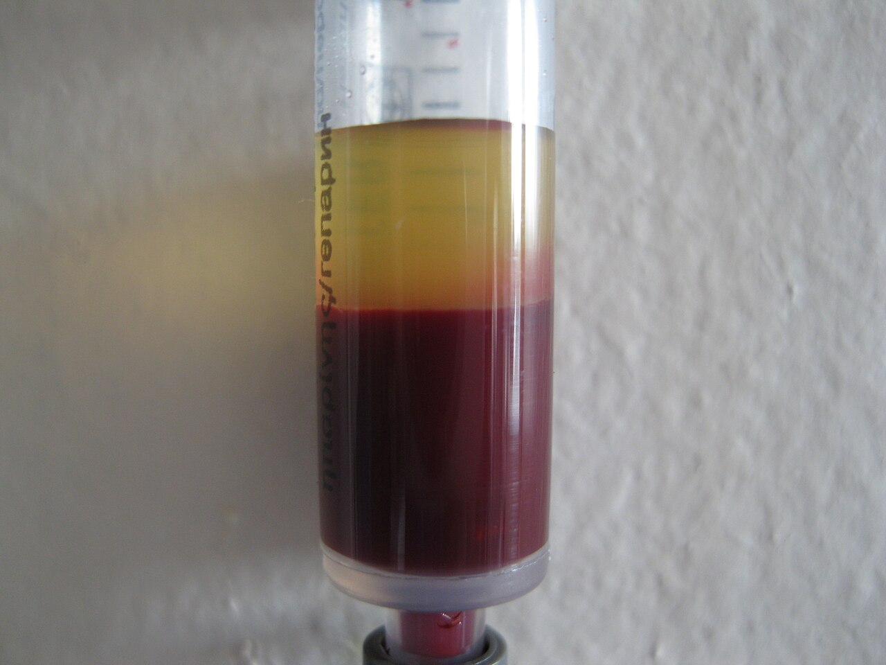
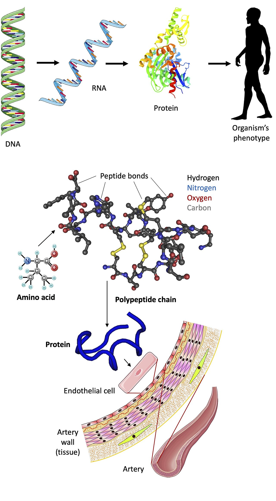
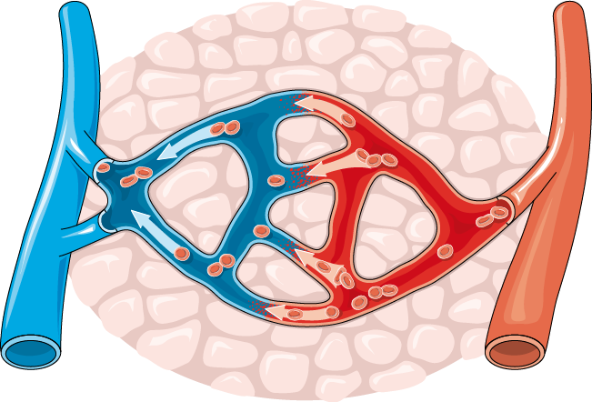
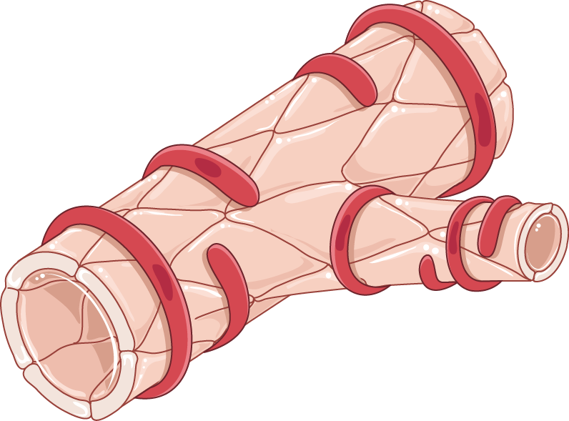

Blood and Blood Vessels
Blood is the only tissue that flows. It flows because a pump makes a pressure difference. That pressure pushes blood through a network of tubes. The body can change the width of those tubes whenever it needs to. Everything in this module comes out of that one idea. Blood carries oxygen because hemoglobin grabs oxygen and lets it go again. Blood stays inside the vessels because albumin holds an osmotic pull of roughly 25 mmHg. Blood seals a hole in seconds, because platelets and thrombin run one of the few real positive-feedback loops in the body. Blood also reaches every organ at a steady rate. That is because the smooth muscle in arterioles sits under constant nerve, hormone and local control. Flow follows a rule borrowed from electricity, Q = ΔP / R. Resistance changes with the fourth power of the radius. So a small change in vessel width makes a large change in flow. Learn the driving forces and the resistances. Then the numbers stop being facts to memorize. Hematocrit, mean arterial pressure and net filtration pressure become quantities you can predict.
By the end of this module you can
- Say what is in plasma and what the blood cells are. Explain how hematocrit and viscosity, the thickness of blood, change the resistance to flow.
- Work out arterial oxygen content from the hemoglobin level and the saturation. Explain why dissolved oxygen adds so little.
- Draw the erythropoietin negative-feedback loop. Name the variable, the sensor, the integrator, the effector and the response.
- Tell the ABO and Rh systems apart. Say what happens after a mismatched transfusion or an Rh-mismatched pregnancy.
- Put hemostasis, the sealing of a leak, in order. It runs from vascular spasm to the platelet plug, then the coagulation cascade and fibrinolysis. Point to where positive feedback works and say how the body brakes it.
- Use Q = ΔP / R and the fourth-power radius rule. Explain why arterioles are the resistance vessels and veins are the storage vessels.
- Work out mean arterial pressure and pulse pressure. Link them to cardiac output, total peripheral resistance and how stretchy the arteries are.
- Use the four Starling forces to predict whether fluid leaves or returns at a capillary. Use them to explain the four separate ways edema, or swelling, happens.
- Trace the baroreflex and the renin–angiotensin–aldosterone system. One holds arterial pressure steady over seconds. The other does it over hours and days.
Section 1What blood is made of, and why the recipe matters

Plasma is a solvent that does mechanical work
An average 70 kg adult carries about 5 L of blood. That is roughly 7 to 8 percent of body weight. Spin a tube of it and it splits into two working parts. On top is a straw-colored fluid called plasma. It makes up about 55 percent of the volume. Below it is a packed column of cells. That is the other 45 percent. Plasma is about 92 percent water by weight. The last 8 percent is the part that does the work. Dissolved in it are electrolytes, which are salts that carry charge. Sodium sits near 140 mEq/L, potassium 3.5 to 5.0 mEq/L, and bicarbonate 22 to 26 mEq/L. Plasma also carries nutrients, hormones, dissolved gases, and waste such as urea and creatinine. And it carries 6 to 8 g/dL of plasma protein.
Those proteins are not just passengers. They make force. Albumin runs 3.5 to 5.0 g/dL. That is roughly 60 percent of the protein mass. Albumin is small, so there are a lot of albumin particles for that weight. That is why it sets most of the colloid osmotic pressure (oncotic pressure) of plasma, about 25 mmHg. The capillary wall lets water and small solutes through freely, but it holds protein back. So that 25 mmHg is a steady inward pull. It works against the outward push of blood pressure. Without it, plasma water would drain away into the space between cells. Albumin also buffers. It is the ride for fatty acids, bilirubin, calcium and many drugs. Globulins carry iron and copper, and they include the antibodies. Fibrinogen runs 200 to 400 mg/dL. It is the dissolved starting material that thrombin turns into the fibrin mesh of a clot. Take fibrinogen out and plasma becomes serum.
Total plasma osmolality sits at 275 to 295 mOsm/kg. Nearly all of that comes from small solutes. Sodium and the anions that ride with it do most of it, along with glucose and urea. Look at the difference in scale. The crystalloid osmotic pressure of plasma is on the order of 5,400 mmHg. The colloid osmotic pressure is only 25 mmHg. Across a capillary wall, only the colloid part counts. Small solutes even out across that wall almost at once, so they pull nothing. Across a cell membrane the story flips. That membrane keeps sodium out, so the crystalloid part decides whether the cell swells or shrinks. Same fluid, different barrier, different effective pull.
Hematocrit, viscosity and the cost of carrying cells
The packed cell fraction is the hematocrit. It runs 42 to 52 percent in adult males and 37 to 47 percent in adult females. It is almost all red cells. Leukocytes and platelets make a buffy coat less than 1 percent thick. Hematocrit is a trade-off. Raise it and every milliliter of blood carries more oxygen. But it also raises viscosity, the thickness of blood. Viscosity sits on top in the resistance equation, so thicker blood means more resistance. Whole blood at a normal hematocrit is about 3 to 4 times as thick as water. Push hematocrit to 60 or 65 percent and viscosity climbs steeply. That happens in polycythemia vera and in a poorly managed testosterone regimen. Resistance rises. The heart must make more pressure for the same flow. The risk of clots goes up. Somewhere near 45 percent, oxygen content times flow reaches its highest value. That is exactly where evolution parked it.
Viscosity is not a fixed property of blood. In small vessels the red cells stream toward the center of the tube. That leaves a plasma-rich layer along the wall. So apparent viscosity falls as vessel diameter falls into the 10 to 300 µm range. This is the Fahraeus–Lindqvist effect. At very low flow rates the opposite happens. Red cells pile up into stacks and viscosity rises again. That is why slow flow in a dehydrated or shocked patient hurts twice over. There is less driving pressure and thicker blood at the same time.
The formed elements, sorted by job
Every blood cell starts from one hematopoietic stem cell in red bone marrow. In an adult that marrow sits mostly in the pelvis, sternum, ribs, vertebrae, and the upper femur and humerus. The stem cell divides into two lines. The myeloid line makes red cells, platelets, granulocytes and monocytes. The lymphoid line makes T cells, B cells and natural killer cells. Colony-stimulating factors and interleukins steer which branch a cell takes. At a steady state the marrow turns out roughly 2 million red cells every second. Under stress it can raise that several times over.
| Element | Normal count | Lifespan | Primary function |
|---|---|---|---|
| Erythrocyte | 4.5–5.5 million/µL | 120 days | Carries oxygen on hemoglobin. Carries CO2 as bicarbonate, using carbonic anhydrase |
| Neutrophil | 50–70 percent of WBCs | 6 h–3 days | First on the scene when bacteria arrive. Eats them and burns them with oxidants |
| Lymphocyte | 20–40 percent | Days to years | Adaptive immunity. Makes antibodies and runs cell-based attacks |
| Monocyte | 2–8 percent | Months in tissue | Becomes a macrophage. Eats debris and shows antigens to other cells |
| Eosinophil | 1–4 percent | 8–12 days | Fights parasites. Tunes allergic responses |
| Basophil | Under 1 percent | Hours to days | Releases histamine and heparin |
| Platelet | 150,000–450,000/µL | 8–10 days | Sticks, clumps, and gives a fatty surface for clotting |
Total leukocyte count runs 4,500 to 11,000/µL. A count above that with mostly neutrophils points to a sudden bacterial infection. A count above that with mostly lymphocytes more often points to a virus. Platelets are not true cells. They are pieces of cytoplasm shed from megakaryocytes. Thrombopoietin controls that shedding. The liver makes thrombopoietin nonstop, and circulating platelets clear it away. So the hormone level rises on its own whenever platelet mass falls. It is a beautifully simple negative feedback.
Plasma protein makes the 25 mmHg oncotic pull that keeps water inside the vessels. Hematocrit sets a trade-off. More red cells means more oxygen in every milliliter. It also means thicker blood, so the heart has more resistance to push against.
Section 2Red cells, oxygen carriage and the erythropoietin loop

The arithmetic of oxygen delivery
A mature erythrocyte, or red blood cell, is a disc pinched in at the center. It is about 7.5 µm across and 2 µm thick. It has no nucleus, no mitochondria and no ribosomes. Every one of those missing parts is useful. Losing the nucleus makes room for roughly 250 million hemoglobin molecules per cell. Losing mitochondria means the cell cannot burn the oxygen it is carrying. It runs entirely on anaerobic glycolysis, which is sugar breakdown without oxygen. The pinched shape gives the most surface for gases to cross. It also lets the cell fold like a taco to squeeze through a 5 µm capillary. Having no ribosomes has a cost. The cell cannot replace worn proteins. So it wears out at about 120 days, and macrophages in the spleen remove it.
Hemoglobin is a tetramer. That means four chains, two alpha and two beta in the adult (HbA, α2β2). Each chain holds one heme with an iron atom at its center. Only Fe2+ binds oxygen. Oxidize that iron to Fe3+ and you get methemoglobin, which cannot carry oxygen. One gram of hemoglobin carries 1.34 mL of oxygen when it is full. Normal hemoglobin is 13.5 to 17.5 g/dL in men and 12.0 to 15.5 g/dL in women. Those facts give the central equation of oxygen transport:
CaO2 = (1.34 × Hb × SaO2) + (0.003 × PaO2)
Put in normal values. Hb is 15 g/dL, SaO2 is 0.98, and PaO2 is 100 mmHg. Arterial oxygen content comes out at about 19.7 + 0.3. That is roughly 20 mL of oxygen per 100 mL of blood. Look at the second term. Dissolved oxygen adds only 0.3 mL/dL, about 1.5 percent of the total. Oxygen barely dissolves in plasma. That is the whole reason hemoglobin exists. It is also why a patient with a hemoglobin of 5 g/dL is in trouble even breathing 100 percent oxygen. You can drive the dissolved term up, but the carried term is what matters. Now multiply content by cardiac output, about 5 L/min. Total oxygen delivery comes to roughly 1,000 mL/min. At rest the body uses about 250 mL/min. That is a four-fold safety margin. Exercise, anemia and low blood oxygen all eat into it.
Erythropoiesis: a textbook negative-feedback loop
The controlled variable is not red cell count. It is not hematocrit either. It is oxygen delivery to the renal cortex, the outer layer of the kidney. The sensor is a group of fibroblast cells that sit between the kidney tubules. They make a transcription factor called HIF-2α nonstop. When oxygen is plentiful, prolyl hydroxylase enzymes tag HIF-2α for destruction within minutes. Those enzymes need oxygen as a substrate to work. When oxygen falls, they slow down. HIF-2α survives, enters the nucleus, and switches on the erythropoietin gene. So the sensor and the integrator are the same cell. Oxygen supply is read straight off the speed of an enzyme reaction. That is about as elegant as biological sensing gets.
Erythropoietin travels to red bone marrow. There the effector response is faster survival and division of proerythroblasts. Those are the young red cell precursors. Within 3 to 5 days the reticulocyte count rises. It goes above its normal 0.5 to 1.5 percent. Within a week or two red cell mass goes up. Oxygen delivery to the kidney rises. Prolyl hydroxylase goes back to destroying HIF-2α. Erythropoietin falls back toward baseline. Variable, sensor, integrator, effector, response. And the response works against the disturbance. That is negative feedback. Here the lag is measured in days rather than seconds. That is why a person who moves to 3,000 m altitude feels awful for a week. It is why they are acclimatized after three.
The loop needs raw material. Iron is the one that runs short first. About 70 percent of body iron sits in hemoglobin. Iron is absorbed in the duodenum. It is carried on transferrin and stored as ferritin. The body guards it jealously. Macrophages destroy old red cells. They hand the iron back instead of throwing it away. Vitamin B12 and folate are needed to build DNA in dividing erythroblasts. Without them the cell cannot divide on schedule. It keeps making cytoplasm anyway. The result is a megaloblastic anemia, with large, immature-nucleated cells. B12 absorption also needs intrinsic factor. Parietal cells in the stomach make it. That is why gastric surgery or autoimmune gastritis causes pernicious anemia years later. It appears once liver stores run down.
When the loop fails: anemia and polycythemia
Anemia means the blood carries less oxygen than it should. The mean corpuscular volume, or MCV, sorts the causes out fast. MCV is the average size of a red cell, and it is normally 80 to 100 fL. Microcytic anemia has an MCV under 80. That points to a problem making hemoglobin, above all iron deficiency, then thalassemia. Macrocytic anemia has an MCV over 100. That points to a problem making DNA, so think B12 or folate deficiency, or alcohol. Normocytic anemia points to blood loss, to red cells breaking apart, or to a marrow that is not making enough. Whatever the cause, the body answers in ways you can predict from the physiology. Cardiac output rises. 2,3-BPG builds up, which shifts the oxygen–hemoglobin curve right so more oxygen is handed over per gram. Erythropoietin climbs. Pale skin, tiredness, breathlessness on effort and a flow murmur all follow from the lower content and the higher flow.
Polycythemia is the loop failing the other way. Primary polycythemia is called polycythemia vera. It is a marrow mutation. The marrow makes red cells without waiting for erythropoietin. So the erythropoietin level is low. Secondary polycythemia is the loop answering real hypoxia correctly. The causes include altitude and chronic lung disease. They also include cyanotic heart disease, obstructive sleep apnea and heavy smoking. There the erythropoietin level is high. Both forms raise viscosity. Both raise the risk of clots. Treatment for the primary form is often simply to remove blood.
Surface antigens: ABO, Rh and why transfusion has rules
Red cell membranes carry inherited antigens made of protein and sugar. The ABO system is unusual. People make antibodies against the antigens they lack. They do it even if they have never had a transfusion. That happens because gut bacteria display similar sugar shapes. A type A person has A antigen and anti-B antibodies. Type B has B antigen and anti-A. Type AB has both antigens and neither antibody. Type O has neither antigen and both antibodies. These are IgM antibodies, and they set off complement well. So an ABO-incompatible transfusion is fast and severe. Red cells break apart inside the vessels right away. The patient gets hemoglobin in the urine, low blood pressure and fever. Sudden kidney injury can follow. The reaction starts within minutes.
| Blood type | Antigen on RBC | Antibody in plasma | Can receive RBCs from |
|---|---|---|---|
| A | A | Anti-B | A, O |
| B | B | Anti-A | B, O |
| AB | A and B | None | A, B, AB and O. This is the universal recipient |
| O | None | Anti-A and anti-B | O only. This is the universal red cell donor |
The Rh system works differently. About 85 percent of people carry the D antigen, so they are Rh-positive. Rh-negative people do not already have anti-D. They make it only after they meet the antigen. That antibody is IgG, and IgG crosses the placenta. This is where hemolytic disease of the newborn comes from. An Rh-negative mother can be sensitized at a first delivery of an Rh-positive baby. She then makes anti-D. In a later Rh-positive pregnancy that anti-D attacks the fetal red cells. Anti-D immune globulin prevents this. It is given at about 28 weeks and again within 72 hours of delivery. It clears fetal cells from the mother’s blood before she can be sensitized. That is a rare case of preventing an immune memory instead of treating what it does.
Almost all the oxygen in blood rides on hemoglobin. Very little of it is dissolved. The kidney watches oxygen delivery. It closes a negative-feedback loop. When oxygen in the kidney cortex falls, the kidney sends out erythropoietin.
Section 3Hemostasis: sealing a leak without clotting the whole system

Vascular spasm and the platelet plug
Intact endothelium is the lining of a vessel. It actively fights clotting. It offers a smooth, negatively charged surface. It releases prostacyclin and nitric oxide. Those stop platelets clumping and widen the vessel. It carries heparan sulfate, which speeds up antithrombin. It also displays thrombomodulin. So do not picture hemostasis as a switch that flips when a vessel is cut. Picture a steady brake being lifted. Picture a trigger being uncovered at the same time.
The trigger is collagen and tissue factor under the lining. Within seconds the injured smooth muscle and endothelin from the damaged endothelium cause vascular spasm. The vessel narrows and flow drops. Remember that resistance changes with the fourth power of the radius. So even a modest narrowing cuts flow dramatically. Platelets then stick to the exposed collagen. They use von Willebrand factor as a molecular bridge to the platelet GPIb receptor. Von Willebrand factor matters most where blood moves fast and shears hard. That is why von Willebrand disease shows up as bleeding from mucous membranes and skin, in small vessels with high flow.
Sticking to collagen switches the platelet on. It changes shape and puts out arms. It flips negatively charged phosphatidylserine to the outer face of its membrane. It empties its granules, releasing ADP, serotonin and calcium, and it makes thromboxane A2. ADP and thromboxane A2 pull in more platelets and switch them on. Those platelets release more ADP and thromboxane A2. This is real positive feedback. The product of the reaction speeds up the reaction. Clumping happens when GPIIb/IIIa receptors on activated platelets grab fibrinogen. That cross-links platelets into a plug within a few minutes. Aspirin blocks cyclooxygenase for good, so no more thromboxane A2 is made for the platelet’s whole 8 to 10 day life. A platelet has no nucleus, so it cannot build new enzyme. That is why one low-dose aspirin works for days.
The coagulation cascade is an amplifier
A platelet plug is fragile. To make it last you need fibrin. The cascade that makes fibrin is a chain of enzymes cutting each other open. One activated enzyme cuts many molecules of the next. So each step amplifies the signal by thousands. In the body the cascade starts with the extrinsic (tissue factor) pathway. Tissue factor uncovered at the injury binds factor VII, and that activates factor X. The intrinsic (contact) pathway uses factors XII, XI, IX and VIII. It keeps the response going and makes it bigger. Both feed into the common pathway. Activated factor X joins factor V, calcium and platelet phospholipid to form prothrombinase. Prothrombinase turns prothrombin (factor II) into thrombin.
Thrombin is the hinge of the whole system. It cuts fibrinogen into fibrin monomers, and those link up into strands. It activates factor XIII, which locks those strands into a mesh with strong bonds. It also loops back to activate factors V, VIII and XI and to switch on more platelets. That last set of jobs is a second positive-feedback arm. It is why a small tissue-factor signal makes a burst of thrombin rather than a trickle. The mesh traps red cells, which is why a clot is red rather than white. Over hours, actin and myosin inside the platelets pull the clot tight. That drags the wound edges together and squeezes out serum.
Calcium (factor IV) is needed at several steps. That is why blood tubes for clotting tests hold citrate, which locks the calcium up. Factors II, VII, IX and X need vitamin K, and so do the braking proteins C and S. Vitamin K lets a carboxyl group be added after the protein is built. That change is what lets these factors bind calcium and anchor to phospholipid surfaces. Warfarin blocks vitamin K epoxide reductase, so it lowers the working level of all six. Warfarin acts on new protein, not on protein already circulating. That is why its effect takes 2 to 3 days to appear, as the existing factors are cleared.
Braking, dissolving and testing
Three overlapping systems keep clotting local. Antithrombin III shuts down thrombin and factor Xa. Heparin speeds that reaction up roughly a thousand-fold. Endothelial heparan sulfate does the same. Protein C is switched on by the thrombin–thrombomodulin complex. That complex sits on intact endothelium. Protein C works with protein S. Together they break down factors Va and VIIIa. Notice how neat that is. Thrombin itself becomes an anticoagulant once it drifts onto healthy lining. Tissue factor pathway inhibitor turns off the starting complex. Last comes fibrinolysis, which takes the clot apart. Endothelium releases tissue plasminogen activator. That turns plasminogen into plasmin. The plasminogen is already caught in the fibrin mesh. Plasmin chews fibrin into fragments, including D-dimer.
| Test | Normal | Pathway assessed | Typical use |
|---|---|---|---|
| Platelet count | 150,000–450,000/µL | Primary hemostasis | Bleeding risk. Bleeding can start on its own under about 20,000 |
| PT / INR | 11–13 s / INR 0.8–1.1 | Extrinsic and common (VII) | Watching warfarin. Checking how well the liver builds protein |
| aPTT | 25–35 s | Intrinsic and common (VIII, IX, XI, XII) | Watching unfractionated heparin. Checking for hemophilia |
| D-dimer | Under 500 ng/mL FEU | Fibrinolysis | Catches nearly every case but flags many that are fine. Useful to rule out VTE |
| Fibrinogen | 200–400 mg/dL | How much raw material is left | Falls in DIC and severe liver disease |
Virchow’s triad is the best way to predict a harmful clot. It is simply the three ways this physiology can go wrong. First, flow slows down. Think of being immobile, atrial fibrillation, or a long flight. Second, the vessel lining is injured. Think of trauma, surgery, smoking, or a line left in a vein. Third, the blood clots too easily. Think of pregnancy, estrogen therapy, malignancy, or factor V Leiden. Any one raises the risk. Together they multiply it. Notice that two of the three are about flow, not about the blood itself. That is another reminder that blood and vessels are one system.
Hemostasis is a positive-feedback amplifier. Platelets switch on and thrombin bursts. The body keeps that burst on the injured patch on purpose. The fencing is done by endothelial prostacyclin and nitric oxide. Antithrombin, protein C and plasmin help.
Section 4Vessels as plumbing: pressure, resistance and flow

Q = ΔP / R, and where the resistance actually lives
Flow through any tube needs a pressure difference to drive it, and resistance holds it back. In the systemic circulation, Q = ΔP / R. Q is cardiac output, about 5 L/min at rest. ΔP is mean arterial pressure minus right atrial pressure. That is roughly 93 minus 3, so about 90 mmHg. R is total peripheral resistance. Rearrange it and you get MAP = CO × TPR. That is the single most useful equation in cardiovascular physiology. Every blood-pressure problem and every blood-pressure drug acts on cardiac output, on peripheral resistance, or on both.
Resistance itself comes from Poiseuille’s relationship, R = 8ηL / (πr4). Here η is viscosity, L is vessel length and r is radius. Viscosity and length barely move in the short term. Radius does move, and it is raised to the fourth power. Halve the radius of a vessel and resistance rises sixteen-fold. Widen the radius by 19 percent and flow doubles. No other variable in physiology gives the body that much leverage for so little effort. That is why the arteriole is the control point. An arteriole is 10 to 100 µm across with a very thick ring of smooth muscle for its size.
The pressure profile proves it. Mean pressure barely falls from the aorta, about 93 mmHg, to the small arteries, about 90 mmHg. Then it plunges across the arterioles to roughly 35 mmHg at the capillary inlet. It drifts down to about 15 mmHg at the capillary outlet. It arrives at the right atrium near 2 to 5 mmHg. The largest pressure drop sits where the largest resistance sits. So arterioles are the taps of the circulation. Narrow them everywhere and mean arterial pressure rises. Narrow them in one place only and blood is redirected between organs, with almost no change in total output. During exercise the arterioles in skeletal muscle widen under local metabolic control. At the same time the splanchnic arterioles narrow under sympathetic control. Blood is shared out to match.
Wall structure follows function
Every vessel except a capillary has three layers, called tunics. The tunica intima is endothelium on a basement membrane. It is the surface that fights clotting, changes vessel width, and controls what crosses. The tunica media is smooth muscle and elastic tissue, and it sets the caliber of the vessel. The tunica externa is collagen that anchors the vessel in place. In large vessels it also holds the vasa vasorum, tiny vessels that feed the outer wall. That wall is too thick to be supplied by diffusion from the lumen.
Elastic arteries, also called conducting arteries, include the aorta. Their media is packed with sheets of elastin. They stretch during systole and recoil during diastole. Muscular arteries, also called distributing arteries, hold more smooth muscle and steer blood to organs. Arterioles are almost pure smooth muscle for their size. Capillaries are a single endothelial layer about 0.5 µm thick with a lumen of 5 to 10 µm. That thinness is the point. Diffusion distance sits on the bottom in Fick’s law, J = D × A × (ΔC / Δx). Continuous capillaries leak the least. They are found in muscle and skin, and with tight junctions they form the blood–brain barrier. Fenestrated capillaries have pores for filtering large volumes. They are found in kidney, intestine and endocrine glands. Sinusoidal capillaries have gaps wide enough to pass whole cells. They are found in liver, spleen and marrow.
Veins have thin medias, wide lumens and one-way valves. Compliance is the change in volume per unit change in pressure, C = ΔV / ΔP. Veins are roughly 20 times more compliant than arteries. That is why they hold about 60 to 70 percent of total blood volume at any moment, at pressures under 15 mmHg. So veins are the body’s reservoir. Sympathetic venoconstriction squeezes that reservoir toward the heart. Venous return and preload go up, and arterial resistance is barely touched. The skeletal-muscle pump and the respiratory pump push blood upward against gravity, from one pair of valves to the next.
Compliance, pulse pressure and the windkessel
The heart ejects in bursts. Yet flow through capillaries is nearly continuous. Elastic arteries do that conversion. During systole the aorta accepts about 70 mL of stroke volume and stretches. It stores roughly half the ejected volume as elastic potential energy. During diastole it recoils. It pushes that stored volume forward. This is the windkessel effect, named after an air chamber. It is why diastolic pressure never falls to zero.
Two useful numbers come out of this. Pulse pressure is systolic minus diastolic. Normally that is about 120 − 80 = 40 mmHg. It rises with a larger stroke volume and with stiffer arteries. Mean arterial pressure is not the plain average. Diastole takes up about two-thirds of the cardiac cycle at rest. So MAP ≈ DBP + (1/3 × pulse pressure) = 80 + 13 ≈ 93 mmHg. MAP is the pressure that actually perfuses organs. Below about 60 mmHg, kidney and brain autoregulation fail and tissue injury begins. In an older adult, collagen replaces elastin and aortic compliance falls. The same stroke volume then makes a bigger systolic spike and a weaker diastolic recoil. The result is isolated systolic hypertension with a wide pulse pressure. That is a purely mechanical consequence of a stiffer tube.
Velocity, cross-sectional area and turbulence
Flow (Q, volume per time) and velocity (v, distance per time) are tied together by Q = v × A, where A is total cross-sectional area. Every drop of blood must pass through every level of the tree, so Q is the same at each level. Velocity must therefore fall as total cross-sectional area rises. The aorta has a cross-sectional area of about 2.5 cm2 and a mean velocity near 30 to 40 cm/s. Multiply those out and you get the resting cardiac output of roughly 5 L/min. The billions of capillaries side by side add up to roughly 2,500 to 3,000 cm2. That is about a thousand times more. So velocity there falls to about 0.03 cm/s. A red cell spends 1 to 2 seconds in a capillary. That is exactly the time gases need to equilibrate. Veins reconverge, area falls, and velocity climbs again to about 10 to 15 cm/s in the venae cavae.
Flow is normally laminar. That means it moves in neat rings. The fastest stream runs down the middle. Laminar flow is silent. Flow turns turbulent and audible when velocity, diameter or density rise enough. It also turns turbulent when viscosity falls. That is why a compressed brachial artery makes Korotkoff sounds. You hear them during a blood-pressure measurement. It is why anemia makes a flow murmur, with low viscosity and high output. It is why a narrowed carotid makes a bruit. Turbulence also damages endothelium. That is why atherosclerotic plaques gather at branches and curves. They do not gather along straight segments.
Resistance changes with the fourth power of the radius. So arterioles govern total peripheral resistance. They also decide where flow goes. Compliant veins hold most of the blood volume. They act as an adjustable reservoir.
Section 5Capillary exchange and the control of blood pressure

Starling forces: four pressures, one net result
Most solute exchange across a capillary is simple diffusion down concentration gradients. Oxygen and carbon dioxide go straight through the membrane. Glucose and ions go through clefts and channels. Bulk fluid movement is different. Four pressures govern it, and they are called the Starling forces:
NFP = (Pc − Pif) − (πc − πif)
Capillary hydrostatic pressure (Pc) pushes fluid out. It falls along the capillary from about 35 mmHg at the arterial end to about 15 mmHg at the venous end. Interstitial hydrostatic pressure (Pif) is near 0 mmHg and pushes fluid back in. Capillary colloid osmotic pressure (πc, about 25 mmHg) pulls fluid in. It does not change along the length, since protein does not leave. Interstitial colloid osmotic pressure (πif, about 3 mmHg) pulls fluid out. Do the arithmetic at the arterial end: (35 − 0) − (25 − 3) = +13 mmHg, so fluid filters out. At the venous end: (15 − 0) − (25 − 3) = −7 mmHg, so fluid is reabsorbed. Only one term changed, the hydrostatic pressure. It changed because of resistance along the capillary. Every capillary bed in the body reruns this same sum with different numbers. In the glomerulus πc never wins, so filtration continues the whole length. In the intestinal villus reabsorption dominates instead.
Filtration beats reabsorption by a little. Across the whole body roughly 20 L is filtered per day and about 17 L is reabsorbed. That leaves about 3 L. The lymphatic system returns that 3 L to the subclavian veins, along with any protein that escaped. So lymphatic drainage is not an extra service. It is a required term in the fluid balance. Block it on its own and the tissue swells.
Edema is always a Starling problem
Edema is fluid you can feel building up between the cells. It has exactly four mechanisms. There is one for each term in the equation. Raised capillary hydrostatic pressure increases filtration. That comes from heart failure or a blocked vein. It also comes from deep vein thrombosis, or from standing for a long time. Reduced plasma colloid osmotic pressure weakens the inward pull. That comes from liver failure that cannot build albumin. It also comes from nephrotic syndrome, which loses albumin in the urine. Severe protein malnutrition does it too. Increased capillary permeability lets protein leak out. That comes from histamine in inflammation, from burns, or from sepsis. It raises πif and lowers πc at once. Blocked lymphatic drainage removes the return path. That comes from filariasis, from axillary node dissection, or from a tumor. Naming the disturbed term tells you what will help. It also tells you what will not. Infusing albumin is rational in hypoalbuminemia. It is useless in lymphedema.
The baroreflex: correction in seconds
Arterial pressure must stay high enough to perfuse the brain. It must also stay low enough not to damage vessels. A classic negative-feedback loop defends it. The variable is mean arterial pressure. The sensors are stretch-sensitive baroreceptors in the carotid sinus and the aortic arch. They fire faster as the wall is stretched, and they respond over roughly 60 to 180 mmHg. Their signals travel on the glossopharyngeal nerve (CN IX) and the vagus nerve (CN X). They reach the integrator, which is the nucleus of the solitary tract and the cardiovascular centers of the medulla. The effectors are the sympathetic and parasympathetic outflows. The response opposes the change.
Stand up quickly and roughly 500 to 800 mL of blood pools in your legs. Venous return falls. Stroke volume falls. Arterial pressure dips. Baroreceptors fire less. The medulla withdraws vagal tone and turns up sympathetic outflow. Heart rate rises. Contractility rises. Arterioles constrict through α1 receptors, so total peripheral resistance rises. Veins constrict to restore preload. The whole correction happens within one or two heartbeats. Sometimes it is too slow. That happens in older adults, in dehydration, and with antihypertensive or antidepressant drugs that blunt sympathetic responses. The result is orthostatic hypotension. That means a drop of at least 20 mmHg systolic or 10 mmHg diastolic within three minutes of standing, with dizziness and fall risk.
Two features are worth noticing. First, the reflex works both ways. A rise in pressure makes baroreceptors fire more. The answer is a slower heart and wider vessels. That is why carotid sinus massage can stop a supraventricular tachycardia. Second, the reflex resets. In sustained hypertension the baroreceptors adapt over days. They begin defending the new, higher pressure. So the baroreflex cannot cure chronic hypertension. It steadies pressure moment to moment. It is not a long-term set-point controller.
Longer-term control: RAAS, ADH and the local endothelium
Long-term pressure control belongs to the kidney. Only the kidney can change blood volume. When renal perfusion falls, juxtaglomerular cells release renin. Renin cuts angiotensinogen into angiotensin I. Then comes angiotensin-converting enzyme, mostly in the lung lining. It turns angiotensin I into angiotensin II. Angiotensin II narrows vessels strongly on its own. It also triggers aldosterone release. Aldosterone drives sodium reabsorption in the distal nephron and collecting duct. Water follows the sodium. Angiotensin II also triggers ADH release and thirst. And it boosts proximal sodium reabsorption. So it raises both terms of MAP = CO × TPR. It raises volume and it raises resistance. That takes minutes to hours. Antidiuretic hormone holds on to water. It acts through V2 receptors in the collecting duct. At high levels it narrows vessels too, through V1 receptors. Atrial natriuretic peptide works the other way. The atria release it when stretch signals too much volume. It makes the body dump sodium and water. It widens vessels as well.
| Control system | Onset | Main effector | Effect on MAP = CO × TPR |
|---|---|---|---|
| Baroreflex | Seconds | Autonomic nerves | Both terms. Fast, but resets within days |
| Local metabolic autoregulation | Seconds to minutes | Arteriolar smooth muscle | Shares flow out. Small effect on the total |
| RAAS | Minutes to hours | Angiotensin II, aldosterone | Raises both. The main long-term control |
| ADH | Minutes to hours | Collecting duct, V1 vessels | Raises volume, then CO |
| ANP | Hours | Kidney, vessels | Lowers both |
| Renal pressure natriuresis | Hours to days | Urine sodium and water output | Sets the long-term operating point |
On top of all this sits local control. Local control is what actually matches flow to need. Endothelium releases nitric oxide when blood shears past it. It does the same in answer to acetylcholine. Nitric oxide relaxes the smooth muscle underneath. Injured endothelium releases endothelin-1 instead. That is the most potent vasoconstrictor known. Tissue metabolites widen local arterioles. Falling oxygen does it. So do rising carbon dioxide, hydrogen ion, potassium, adenosine and lactate. That widening is active hyperemia. The same mechanism gives reactive hyperemia. That is the flush that follows the release of an occlusion. Myogenic autoregulation adds a mechanical layer. An arteriole stretched by rising pressure contracts. So flow to brain, kidney and heart stays near constant. It holds across a MAP range of roughly 60 to 160 mmHg. Nitroglycerin works because it is a nitric oxide donor. ACE inhibitors work by blocking the making of angiotensin II. Alpha blockers remove the α1 squeeze on arterioles, so the vessel dilates. Every antihypertensive drug class acts at a named point on this map.
The Starling equation decides where fluid sits. The baroreflex defends arterial pressure within seconds. The kidney sets the long-term operating point. It does that by controlling blood volume, through RAAS, ADH and pressure natriuresis.
The module in one breath
Blood is cells suspended in a protein-rich plasma, and both halves do mechanical work. Albumin makes the 25 mmHg oncotic pull that keeps water inside the vessels. Red cells at a hematocrit near 45 percent balance oxygen content against viscosity. Almost all oxygen travels bound to hemoglobin, about 20 mL per 100 mL of blood. Dissolved gas adds under 2 percent. The kidney senses oxygen delivery to its cortex through HIF-2α. It closes a negative-feedback loop by releasing erythropoietin to the marrow. When a vessel is breached, the endothelial brake is lifted. Exposed collagen and tissue factor launch a positive-feedback amplifier, which is platelet activation and a thrombin burst. Prostacyclin, nitric oxide, antithrombin, protein C and plasmin confine that amplifier on purpose. Flow through the network obeys Q = ΔP / R, and resistance changes with the fourth power of the radius. So arterioles set total peripheral resistance and decide where flow goes. Elastic arteries smooth a pulsing ejection into steady capillary flow. Compliant veins store most of the blood volume. At the capillary, the four Starling forces decide filtration or reabsorption. Disturb any one of them and you get edema. Arterial pressure is defended in seconds by the baroreflex. It is defended over hours to days by the kidney, through RAAS, ADH and pressure natriuresis.
Words worth knowing
| Term | What it means |
|---|---|
| Hematocrit | The percent of blood volume made of red cells. It is 42–52 percent in men and 37–47 percent in women. |
| Colloid osmotic pressure | The inward pull made by plasma proteins that cannot cross the capillary wall. It is about 25 mmHg, and albumin makes most of it. |
| Serum | Plasma after clotting has used up the fibrinogen and the other clotting factors. |
| Hemoglobin | A protein of four chains, each holding one iron-containing heme. It carries 1.34 mL of oxygen per gram when fully saturated. |
| Oxygen content (CaO2) | The total oxygen in 100 mL of blood: (1.34 × Hb × SaO2) + (0.003 × PaO2). It is normally about 20 mL/dL. |
| Erythropoietin | A kidney hormone released when oxygen delivery to the cortex falls. It tells the marrow to make red cells. |
| Reticulocyte | A young red cell just out of the marrow. Normally 0.5–1.5 percent, and it rises when the marrow is answering well. |
| Von Willebrand factor | A plasma protein that bridges the platelet GPIb receptor to collagen under the lining. It is essential where blood shears fast. |
| Thrombin | The central clotting enzyme. It turns fibrinogen into fibrin, activates factor XIII, and helps make more of itself. |
| Fibrinolysis | Plasmin digesting fibrin, which dissolves a clot. It leaves D-dimer fragments behind. |
| Virchow’s triad | Slow flow, injured lining, and blood that clots too easily. These are the three routes to a harmful clot. |
| Poiseuille’s law | R = 8ηL / (πr4). Resistance falls with the fourth power of the vessel radius. |
| Total peripheral resistance | All the systemic vascular resistance added up. Arteriolar tone sets most of it. It is the R in MAP = CO × TPR. |
| Compliance | C = ΔV / ΔP. It is how much a vessel stretches per unit of pressure. Veins are roughly 20 times more compliant than arteries. |
| Pulse pressure | Systolic minus diastolic pressure, about 40 mmHg. It widens with a larger stroke volume or stiffer arteries. |
| Mean arterial pressure | The average pressure that feeds the organs. Estimate it as DBP + (1/3 × pulse pressure). It is normally near 93 mmHg. |
| Starling forces | The four pressures (Pc, Pif, πc, πif). Together they decide whether a capillary filters fluid out or takes it back. |
| Baroreflex | Second-to-second negative-feedback control of arterial pressure. It uses stretch receptors in the carotid and the aorta plus the medulla. |
| Active hyperemia | Local widening of arterioles caused by metabolites building up. It matches blood flow to how hard the tissue is working. |
| Autoregulation | An organ holding its own flow nearly constant across a MAP range of roughly 60–160 mmHg, by myogenic and metabolic means. |